Канал с готовыми рационами
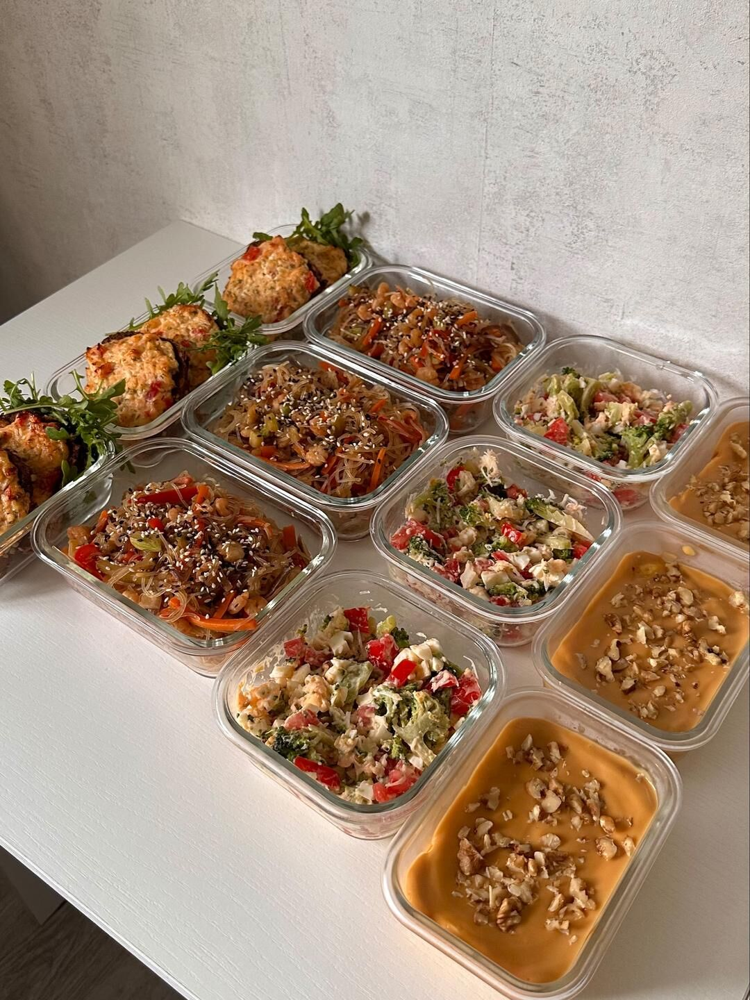
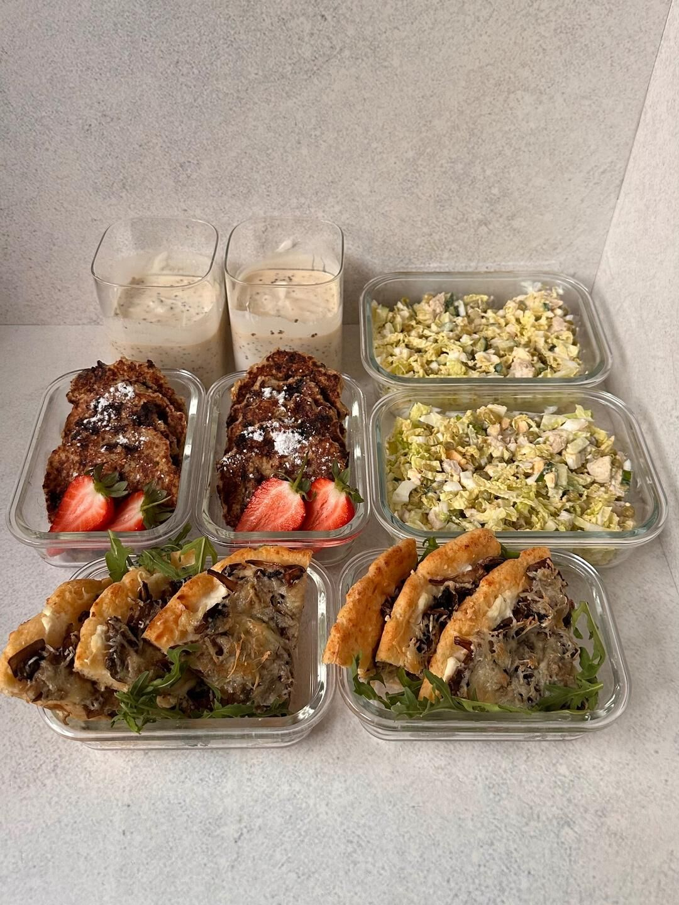
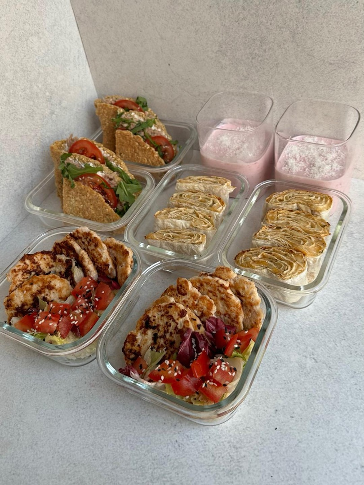
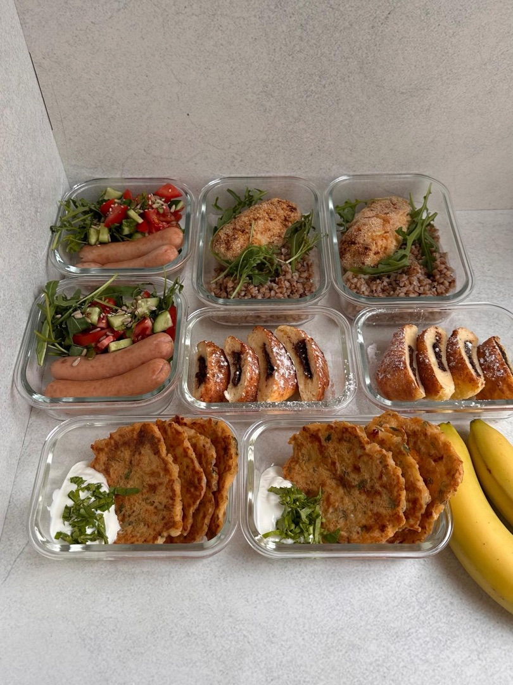
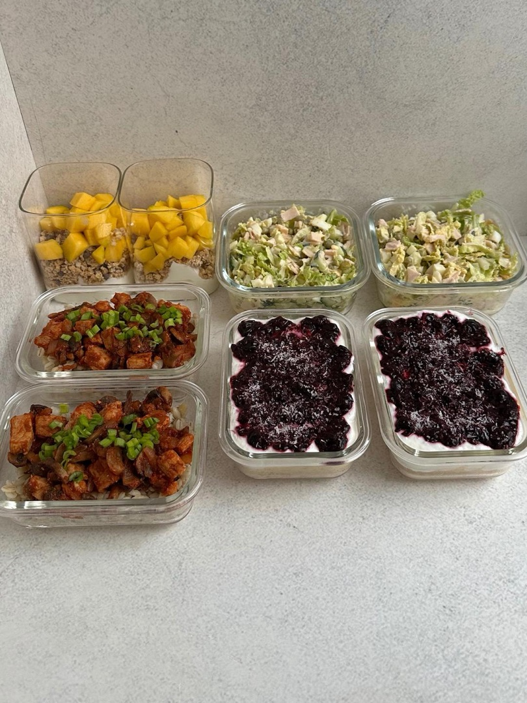
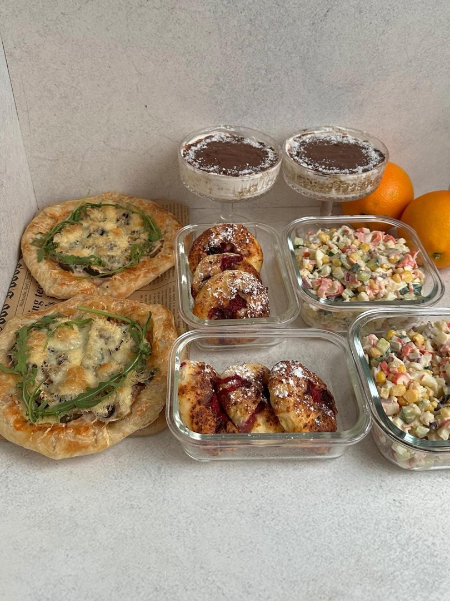
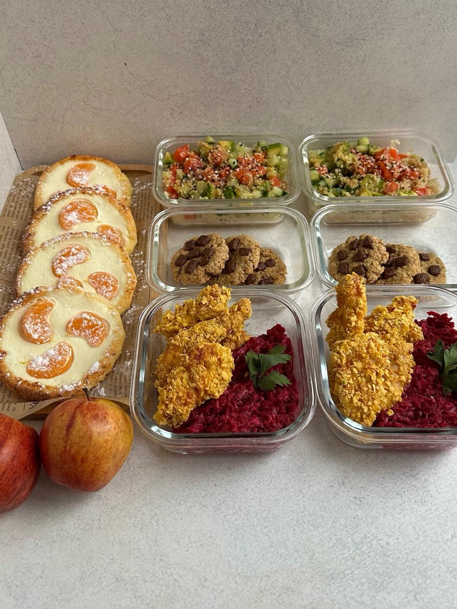
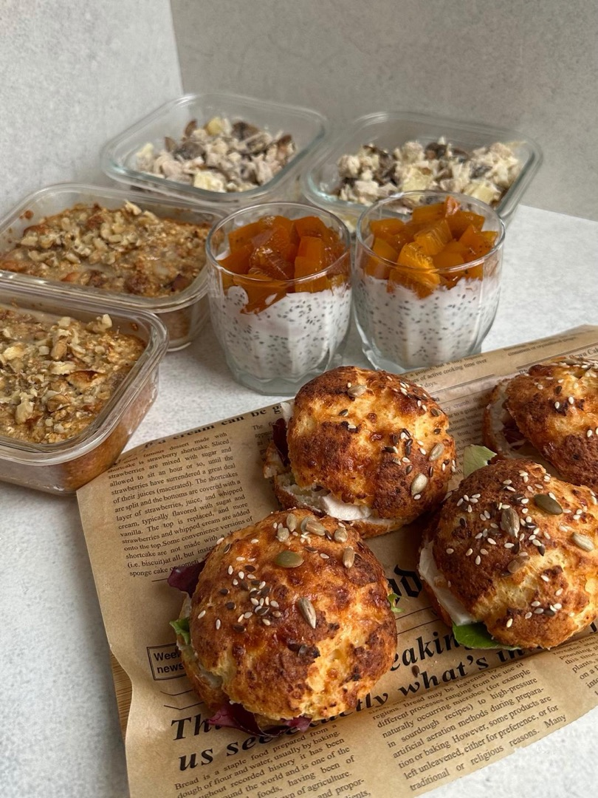
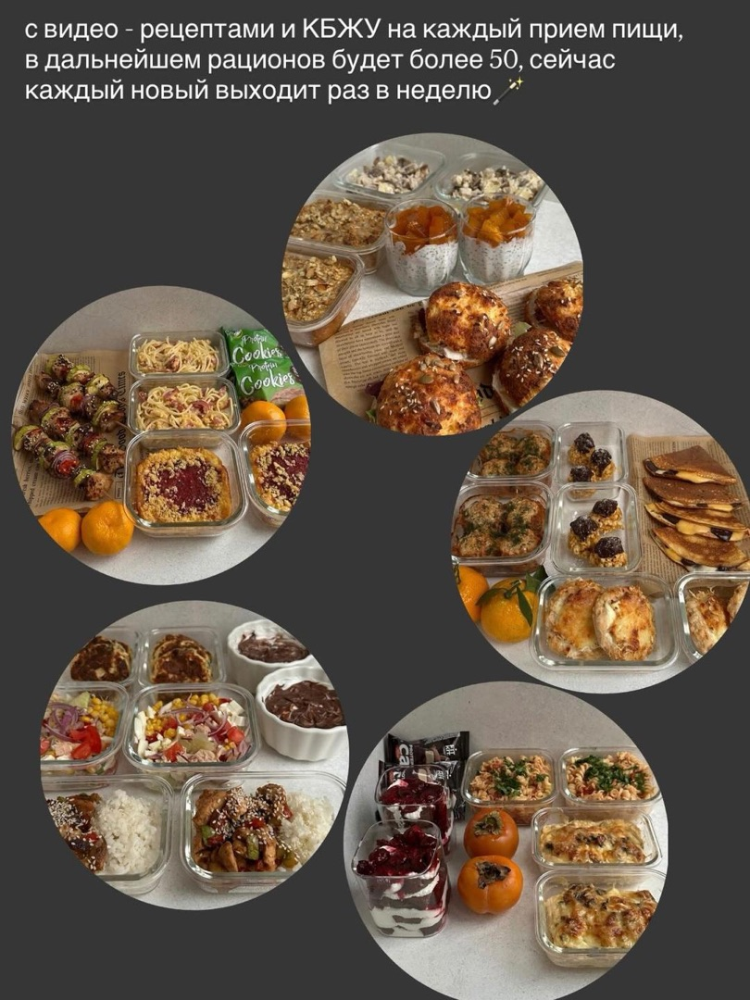
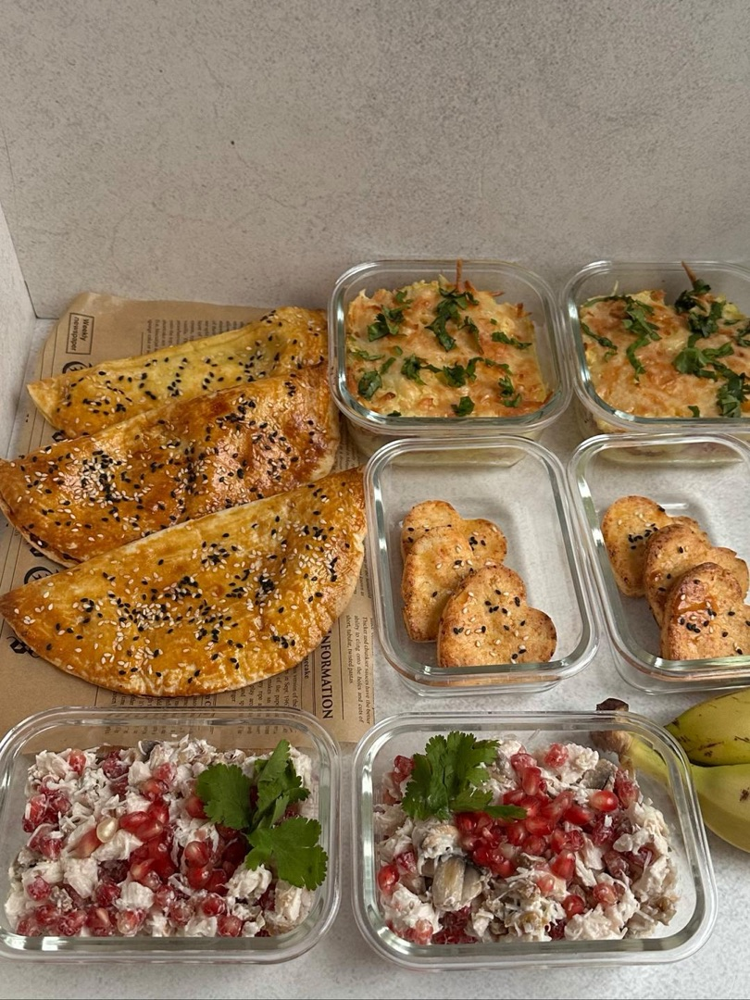
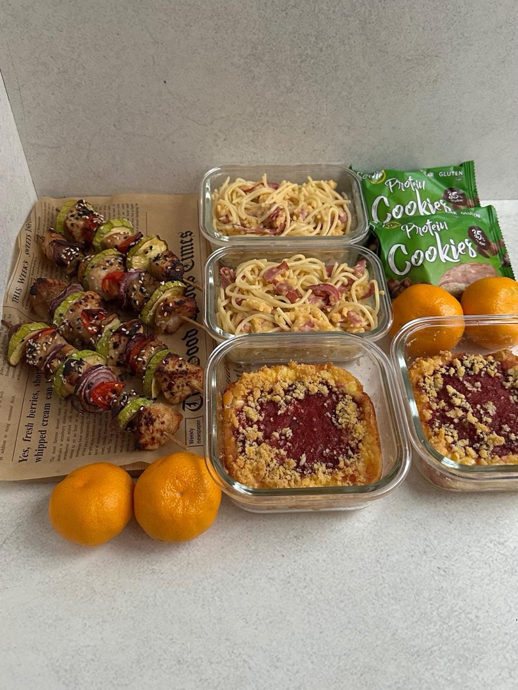
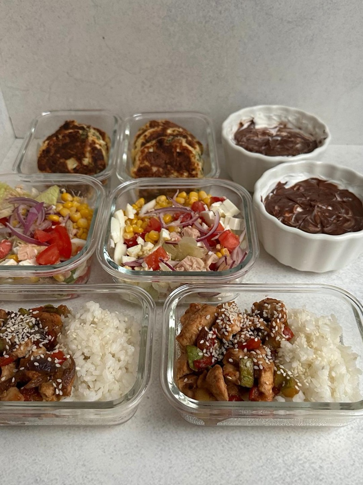
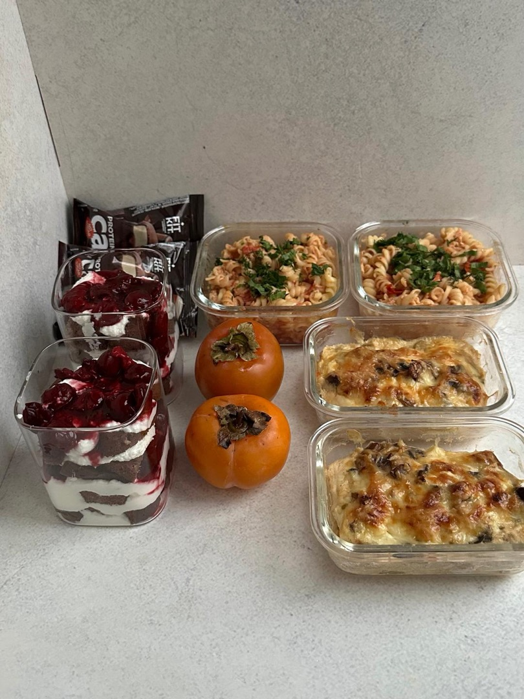
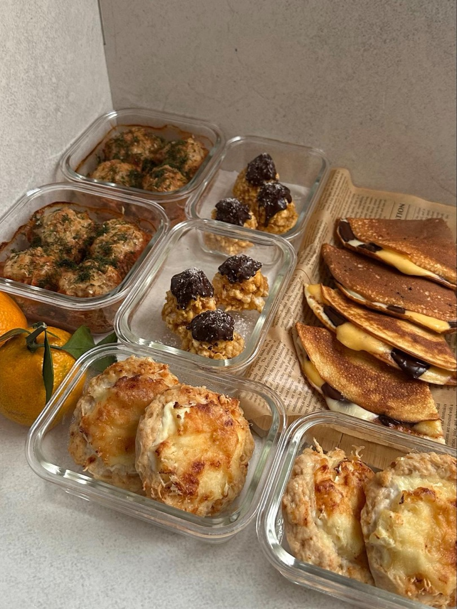
Это закрытый тг-канал с готовыми, сбалансированными рационами, подробными рецептами и КБЖУ для вкусного снижения и поддержания веса
*Вся информация дублируется в закрытое сообщество вк
- Рационы на разные калорийности для здорового, разнообразного питания, в частности на 1300–1600 ккал, можно адаптировать под свою калорийность и бжу
- Рационы с видео-рецептами и КБЖУ на каждый прием пищи. Сейчас в канале уже выложено 48 рационов с готовкой на 2–3 дня, и еженедельно выходит новый
Со временем в канале будет более 50 рационов, при покупке подписки доступ на канал у вас сохраняется навсегда
Это позволит вам экономить время на готовку и мысли «что приготовить», а также бюджет на импульсивные покупки продуктов. Все приемы пищи и сочетания разнообразные из доступных продуктов, фигура благодаря такому питанию меняется в лучшую сторону изо дня в день, как и самочувствие, самоощущение